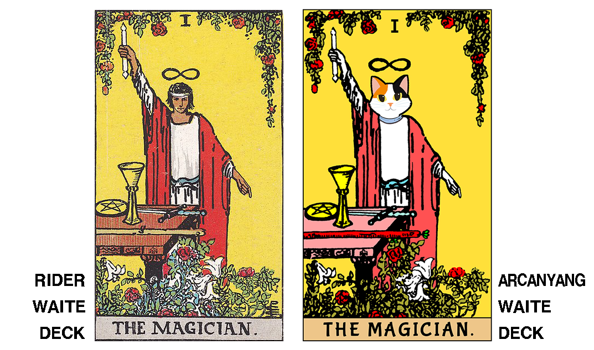
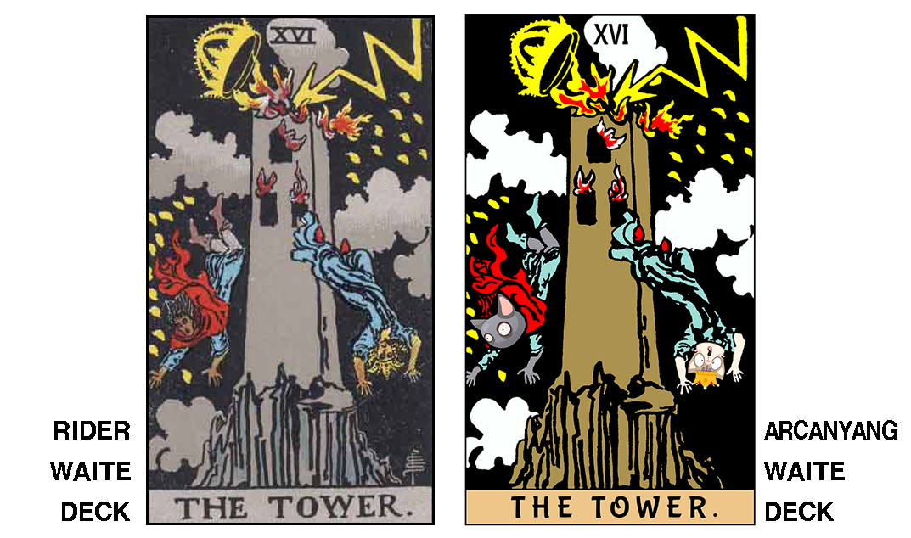
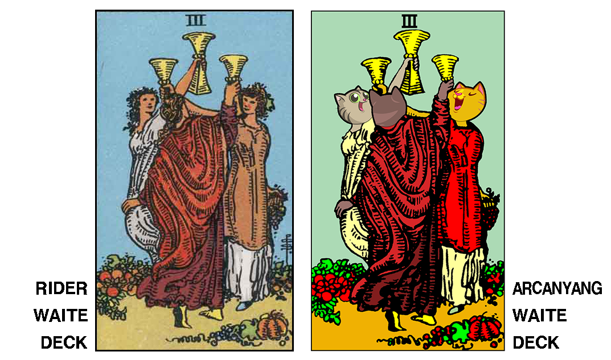
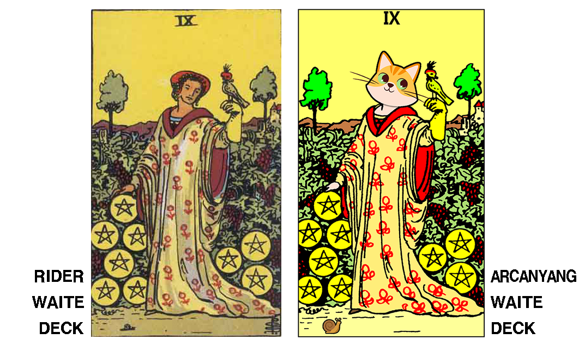

아르카냥-웨이트 타로 덱 (ARCANYANG-WAITE TAROT DECK)
"아르카나(Arcana)"는 숨겨진 비밀을 뜻하는 라틴어 "Arcanum"의 복수형으로서 "아르카냥(Arcanyang)"은 "비밀을 간직한 고양이"라는 뜻을 가집니다.
아르카냥-웨이트 타로 덱은 현대 타로의 표준으로 여겨지며 가장 널리 사용되고 있는 라이더-웨이트 타로 덱(RIDER-WAITE TAROT DECK)을 기반으로 만들어졌습니다.
라이더-웨이트 타로 덱이 퍼블릭 도메인이 된 후 이를 기반으로 하는 수많은 타로 덱이 만들어졌으나, 타로 리딩의 가장 중요한 요소인 이미지의 상징과 디테일, 뉘앙스 등이 왜곡, 누락되는 경우가 많았습니다.
아르카냥-웨이트 타로 덱은 라이더-웨이트 타로 덱의 이미지가 담고 있는 상징과 디테일을 그대로 살리면서 강한 선과 선명한 색감으로 이미지를 보정하고 귀여운 고양이 캐릭터를 접목함으로써 친숙한 느낌이 들도록 제작된 웨이트 계열의 고양이 타로 덱입니다.




